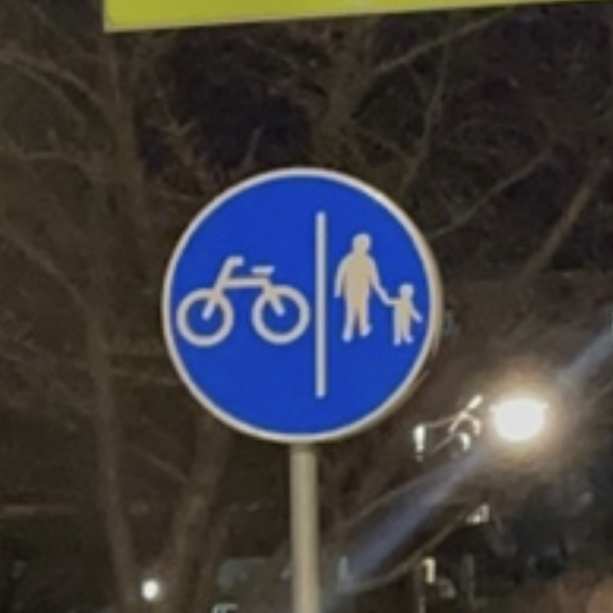
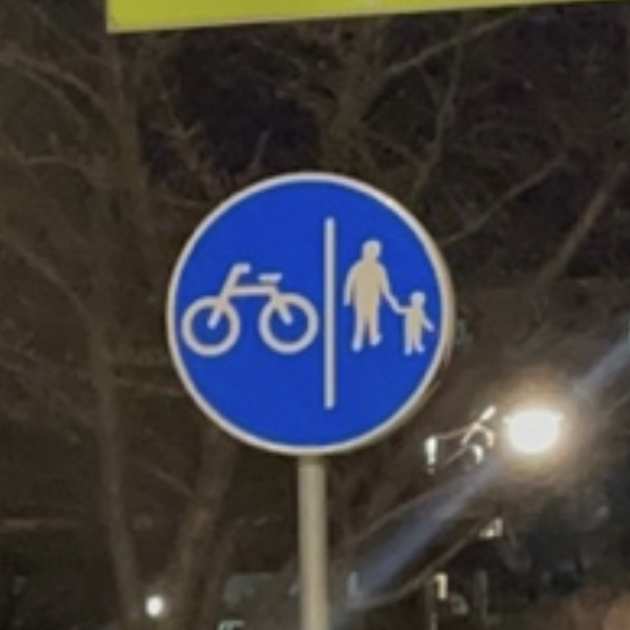

성별
성 역할 고정관념은 아주 오래전부터 우리의 일상속에 자리 잡고 있다. 당장에 모두가 쉽게 알아볼 수 있는 주의, 경고 표지판에도 이런 고정관념들이 조금씩 들어가 있다. 현재에 와서는 예전보다 많이 개선됐다고 보는 편이지만, 아직도 우리 주변에는 이러한 요소들이 주의 깊게 보지 않으면 쉽게 알아채지 못하게끔 스며들어있다.
성 역할 고정관념에 대해 찾아보다가 알아낸 사실인데, 우리가 잘 알지 못하는 뉴기니아의 모 부족은 남녀가 모두 예의 바르고 협동적이며 모범적인 성향을 나타낸다고 한다. 성별에 대해 크게 의식하지 않고 두 성별 다 한 사회의 구성원으로 파악하고 있다는 점에서 남녀관의 구분이 명확하게 드러나지 않는다는 것을 알 수 있었다.